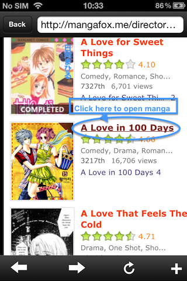
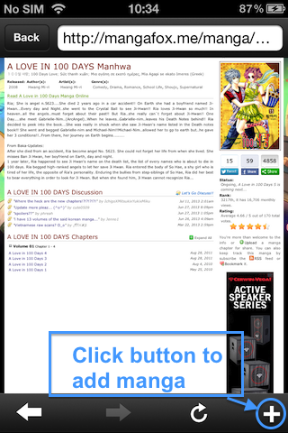
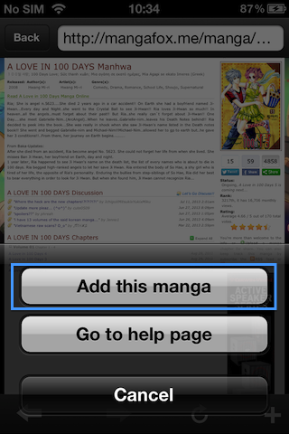
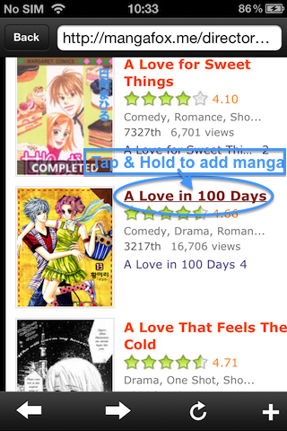
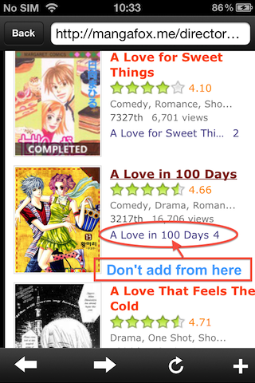
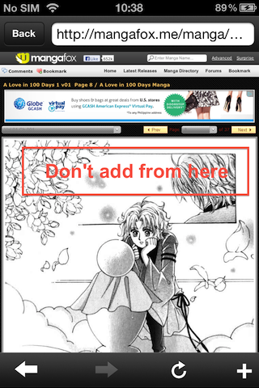
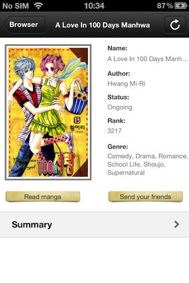
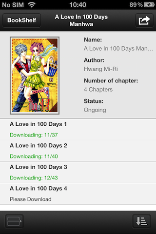

(= Fixed and updated by TNT Team. Please, enjoy our work at InMac.
- WITH THIS APP, YOU CAN BROWSE SOME POPULAR MANGA SITES AS:
+ mangafox.me
+ readmanga.me
+ mintmanga.com (ex adultmanga.com)
+ mangaeden.com
(English)
+ mangaeden.com (Italian)
+ mangareader.net
+ mangahere.com
+ mangavolume.com
+ anymanga.com
+ mangainn.com
+ tenmanga.com
- You can download all mangas from them.
Follow these steps below to download the manga from mangafox.me. With
other sites, you do the same.
I.
Add manga by normal way
Step 1: Browse mangafox.me
with our built-in Web Browser to find your favorites manga.
- You can browse them by Alphabetically (Link:
http://www.mangafox.me/directory)

- You can browse them by Lastest ( Link:
http://www.mangafox.me/directory/?last_chapter_time.za)
- You can browse them by Rating ( Link:
http://www.mangafox.me/directory/?rating.za)
- Or you can search mangas with Advance Search feature of MangaFox.me
(Link: http://www.mangafox.me/directory/?advopts)
Step 2: After open url of
manga, Web Browser will browse as

Step 3: To add this
manga, please press button  then
choose
"Add This Manga".
then
choose
"Add This Manga".

Then a
screen contain some detail infomation of the manga is appear.
II.
Add manga by 'Tap and Hold'
- After found the favorite manga, please 'Tap and Hold' to link of it,
then select "Add this manga".

Note:
- You can't not add manga from chapter's url
of manga


- It can take 10-15 seconds to download detail information.
- If current page in Web Browser does not contain manga, our App will
fire a Error alert.
- Normally, a manga link in form:
http://www.mangafox.me/manga/<name>

Press "Read manga" button to add the manga to "Reading" tab.
Step 4: After pressing "Read
manga" button, application go to "Reading" tab automatically then a
screen as following is appear:

At the screen, you can download, read, or delete chapters of the manga.